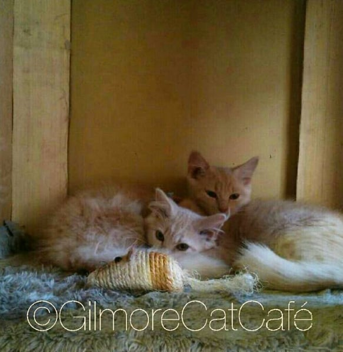

QUEZON CITY · ARCHIVE LISTING
Gilmore Cat Café
Gilmore Cat Café is included as part of Metro Manila's cat-café history rather than as a guaranteed current destination. Its Granada Street address appears in surviving listings, but old schedules conflict and a past visitor reported arriving to find it closed. Explore this entry as an archive, and contact the venue or check a recent official source before making any travel plans.
| Historical address | No. 6 Xavier Hills Condominium, Granada Street, Valencia, Quezon City |
|---|---|
| Operating status | Unclear—confirmation is essential before visiting. |
| Opening hours | Historical sources conflict; do not rely on old schedules. |
| Best viewed as | A record of Metro Manila's early cat-café scene |